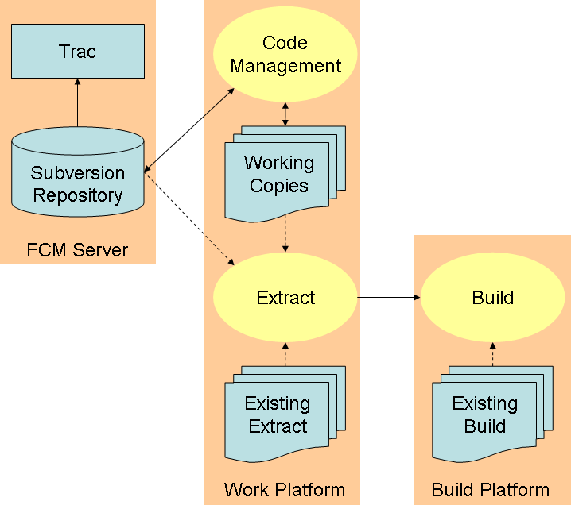

The FCM system is designed to simplify the task of managing and building source code. It consists of the following components:
FCM uses Subversion for version control. For a summary of its main features please refer to the Version Control with Subversion book. Subversion is a generalised tool which can be used in lots of different ways. This makes some day-to-day tasks more complex than they need be. FCM defines a simplified process and appropriate naming conventions. It then adds a layer on top of Subversion to provide a natural interface which is specifically tailored to this process. Where appropriate it simply makes use of the command line tools provided by Subversion. However, in other cases it provides significant additional functionality, e.g.:
FCM uses Trac, a powerful web based tool, to manage software projects. Trac has the following features:
ticketwithin Trac) can be given a priority and assigned to a particular person. Changes made to your Subversion repository can easily be traced to the relevant ticket. Where appropriate, tickets can be used to record information about who has reviewed each change.
roadmapfeature which helps you to plan and manage project releases. Each ticket can be associated with a particular milestone. Trac can then easily show you what features or fixes went into a particular release or what work remains before a particular milestone is reached.
wikiwhich can be used for project documentation.
FCM features a powerful build system, mainly aimed at building modern Fortran software applications. It has the following features:
The diagram below illustrates how these components fit together.
